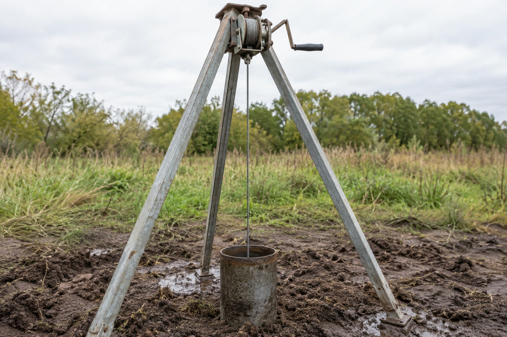

Замена насоса в скважине: когда она правда нужна
Нет воды — меняем насос. Логично, но примерно в половине случаев новый ведёт себя так же, потому что дело было не в нём. Проверяем гипотезу до покупки: что и в каком порядке измерить.
«Насос выработал ресурс, нужна замена» — фраза, после которой велик соблазн согласиться на покупку не глядя: оборудование действительно старое, а разбираться в причине самому не хочется. Но версия «дело в насосе» — это гипотеза, а не диагноз, и проверить её можно до того, как деньги потрачены. Три измерения — ток, давление и динамический уровень — дают основание отличить, изношен ли сам насос или проблема глубже, в самой скважине, и новый насос там поведёт себя точно так же.
Симптом один, причины разные
Слабый напор, шумная работа, частые отключения — набор жалоб на насос и на скважину почти одинаковый, и именно поэтому «на глаз» их не различить. У насоса и у скважины разная физика отказа, но снаружи, у крана, оба варианта выглядят похоже:
- насос изношен физически — стёрлись рабочие ступени (у многоступенчатого центробежного насоса это отдельные секции, каждая добавляет напор), подгорели обмотки двигателя, разболтались подшипники;
- насос работает исправно, но скважина не отдаёт то, что раньше — упал уровень воды в стволе, забился фильтр, изменился дебит горизонта.
Полный список причин снижения дебита самой скважины — отдельная тема, и здесь она не повторяется: почему скважина даёт мало воды. Задача этой статьи — не перечислить причины ещё раз, а дать способ различить, где именно искать: в насосе или в скважине, — прежде чем платить за новое оборудование.
Первое измерение: сила тока
Ток, который потребляет двигатель насоса под нагрузкой, сравнивают с номинальным значением на шильдике насоса — это делают клещами-амперметром на подводящем кабеле, работа для электрика или мастера, а не для голых рук у щитка. Отклонение в любую сторону говорит о разном:
- ток выше номинала — двигатель работает с перегрузкой. Причиной бывает механическое заклинивание рабочего колеса (например, попавшей породой), износ подшипников, из-за которого вал вращается туже, или насос, который в принципе подобран на больший напор, чем реально нужен для этой скважины;
- ток ниже номинала или скачет — вероятна проблема не в самом насосе, а в питании: просевшее напряжение в сети, плохой контакт в клеммах, повреждённая фаза кабеля. Здесь новый насос ничего не изменит: тот же кабель и та же сеть будут «кормить» его так же плохо, как и старый.
Устойчивый ток около номинала при слабом напоре — сигнал, что дело, скорее всего, не в электрической части двигателя, а либо в гидравлике насоса (следующий пункт), либо в самой скважине.
Второе измерение: давление
Здесь важно не значение давления сам по себе, а то, как оно меняется во времени и при каких условиях.
Если давление плавно проседает по мере наработки насоса — за месяцы или годы, без резких скачков, — это чаще указывает на постепенный механический износ рабочих ступеней: они изнашиваются, перекачивают меньше воды за один оборот, и насос перестаёт выдавать паспортный напор при том же электропотреблении. Это тот случай, где гипотеза «дело в насосе» подтверждается измерением, а не остаётся предположением.
Если же давление скачет — насос то держит норму, то резко проседает, то восстанавливается, — картина обычно про другое: реле давления, гидроаккумулятор или обратный клапан. Эти узлы разобраны в статье про пропажу воды в скважине, и там же — порядок их проверки: пропала вода в скважине. Менять насос при скачущем, а не стабильно низком давлении — это чаще всего замена не того узла.
Третье измерение: динамический уровень
Динамический уровень — отметка, на которой стабилизируется вода в стволе во время откачки, а не глубина скважины и не уровень в состоянии покоя. Его измеряют уровнемером — электродом на размеченном кабеле, который на слух и по индикатору показывает, где начинается вода, — обычно это делает мастер при выезде, а не сам хозяин участка.
Смысл измерения простой: если динамический уровень опустился ниже того, что был при опробовании скважины после бурения, и тем более если он подошёл близко к приёмному клапану насоса, — это неисправность не насоса, а падение уровня воды в самом стволе. Насос при этом действительно может работать на пределе, периодически хватая воздух вместо воды при пиковом разборе (сухой ход), и в таком режиме быстро выходит из строя — но причина не в насосе, а в горизонте, который отдаёт меньше воды, чем раньше. Новый насос в той же скважине с тем же просевшим уровнем повторит ту же историю за похожий срок.
Три измерения вместе дают довольно ясную картину: повышенный ток при стабильно низком давлении и нормальном уровне — почти наверняка насос; нормальный ток при скачущем давлении — почти наверняка автоматика; просевший динамический уровень при любом состоянии насоса — проблема скважины, а не оборудования в ней.
Что обычно приводит насос к преждевременному износу
Часть случаев, когда насос действительно пора менять, объясняется не возрастом, а условиями работы, в которых он всё это время находился:
- сухой ход — работа без воды на охлаждение и смазку из-за просевшего уровня или отсутствия датчика защиты; одна из самых частых причин раннего выхода насоса из строя, подробно — в статье про подбор насосного оборудования;
- завышенная относительно дебита производительность — насос физически не может выкачать больше, чем отдаёт горизонт, и в попытке это сделать быстрее изнашивается сам, — там же, в статье про подбор, разобран весь механизм этого вреда;
- абразивный износ — песок в воде истирает рабочие ступени и уплотнения быстрее любого другого фактора; если причина именно в этом, отдельно разобрано здесь: вода с песком из скважины;
- перепады напряжения в сети — без стабилизатора и защиты от сухого хода двигатель со временем теряет ресурс от постоянных нештатных пусков.
Если насос вышел из строя по одной из этих причин, а саму причину не устранить, — новый насос при прежних условиях эксплуатации отработает примерно тот же срок, что и старый, и вопрос замены встанет снова.
Заклинивший насос — не задача для самостоятельного извлечения
Отдельный случай — насос, который перестал реагировать на команды и не поднимается тросом при попытке достать его самому. Здесь стоит остановиться, а не тянуть сильнее: трос или кабель питания может оборваться, и тогда насос падает на забой скважины, откуда его подъём — уже отдельная и не всегда дешёвая операция со специальным аварийным инструментом, а в худшем случае вообще утраченная скважина, если извлечь не получается.
Норматив на конструкцию скважины прямо предусматривает монтаж и демонтаж секций скважинных насосов через люк над устьем с применением средств механизации (СП 31.13330.2021, п. 8.11) — то есть лебёдки или треноги, рассчитанной на вес узла и глубину подвеса, а не ручной тяги. К этому добавляется и электрическая часть: даже обесточенный на вид кабель погружного насоса требует осторожности при работе в мокром кессоне. Что из ремонта скважины действительно можно сделать своими руками, а что нет и почему, — отдельно: ремонт скважины своими руками.

Когда замена оправдана, а когда — нет
Если измерения показывают повышенный ток при стабильно низком давлении и нормальном динамическом уровне — насос действительно изношен, и замена решит проблему. Если давление скачет при нормальном токе — вероятнее неисправность автоматики, а не насоса. Если просел динамический уровень — новый насос при прежних условиях столкнётся с той же нехваткой воды, и деньги разумнее сначала направить на выяснение причины в самой скважине, а не на замену оборудования, которое, возможно, ещё вполне работоспособно.
Провести измерения и получить объективную картину по своей скважине, а не только визуальный осмотр, можно при выезде на ремонт и обслуживание.